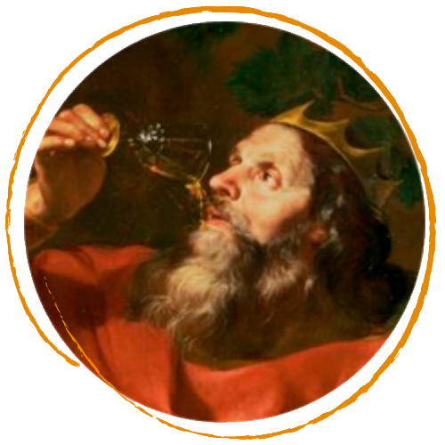

OS REIS
SIR ARTHUR PENDRAGON
REI DA BRETANHA

É considerado rei por ser um predador nato, e estar no topo de cadeia alimentar. O gregos colocavam os leões como representação de nobreza e bravura e os imperadores usavam imagens do animal para transmitir a mensagem de que eram fortes e honrados, e é essa sua função no conceito da 4k.
LEÃO DO ATLAS
REI DAS FERAS

É considerado rei por ser um predador nato, e estar no topo de cadeia alimentar. O gregos colocavam os leões como representação de nobreza e bravura e os imperadores usavam imagens do animal para transmitir a mensagem de que eram fortes e honrados, e é essa sua função no conceito da 4k.
MIDAS
REI DA FRÍGIA
Midas recebeu do Deus Baco o dom de transformar em ouro tudo o que tocasse, e assim ele é lembrado. Algum tempo depois pediu que voltasse ao normal, abandonando a vida de luxos. E é com um mix dessas ações que o rei Midas vem: com seu toque para abençoar, e orientar na prosperidade e crescimento da marca.
MOMO
REI DA FOLIA

Símbolo do carnaval brasileiro é quem comanda a folia. Possui uma personalidade zombeteira, delirante e sarcástica. As chaves da cidade são entregues para ele pelas mãos do prefeito e com isso está aberto o reinado da folia, onde Momo reina absoluto. Vem pra representar a variedade nos tamanhos.
SOL
ASTRO REI

É considerado rei por ser um predador nato, e estar no topo de cadeia alimentar. O gregos colocavam os leões como representação de nobreza e bravura e os imperadores usavam imagens do animal para transmitir a mensagem de que eram fortes e honrados, e é essa sua função no conceito da 4k.